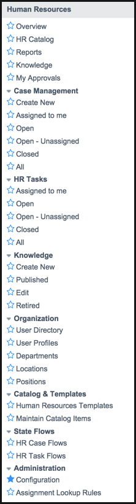

Human Resources Service Management
| |
Note: This article applies to Fuji and earlier releases. For more current information, see HR Service Delivery at http://docs.servicenow.com
The ServiceNow Wiki is no longer being updated. Visit http://docs.servicenow.com for the latest product documentation. |
Contents
1 Overview
HR service management uses service management principles to help automate standardized human resources (HR) processes within your organization. HR service management manages the service relationships between HR and employees through an HR service catalog.
HR service management allows:
- All employees to use the HR catalog to submit requests to your organization's HR department.
- HR staff to create, manage, and view HR cases to process staff requests.
- HR managers to run reports and view overview information to track and manage work done by the HR department.
2 Benefits of HR Service Management
- Configurable flow of requests: By setting the configuration options, you can tailor the flow of case information through your system, including handling approvals, auto-assignment of agents, and using templates for common requests and tasks.
- Flexible roles: By assigning roles from an enhanced list of roles, starting the the Fuji release.
- Reduced service delivery cost: By reducing the volume of checklists, email exchanges, and phone calls needed by your organization's HR team for tasks such as employee onboarding.
- Improved employee access: By providing employees with transparent access to all HR services through a service catalog, rather than having to write individual emails, make phone calls, or personally visit HR for each request.
- Track requests and progress: By using reports and views to help HR managers understand the work being done by their staff to support the company. Employees can also see the current status of their requests.
- Customize processes: By creating workflows to accurately model your organization's HR processes, delivering services exactly tailored to your organization's requirements.
- Integrate with other services: By using HR service management processes to include both HR tasks and tasks for other teams, giving HR teams significant service delivery improvements.
3 Menus and Modules
HR service management contains these modules:
|  |
|
{kind=link}
HR service management also adds the following modules to the Self-Service application menu:
- Self-Service > My Requests: Create and view your requests.
- Self-Service > HR Catalog: Submit HR requests using individual catalog items.
| |
Note: If upgrading to Eureka, the HR catalog is not provided. HR Catalog entries are retained within the Service Catalog > Human Resources category used for Dublin. |
4 Activating HR Service Management
Human resources service management is available as a separate subscription that uses the Human Resources Service Automation: Core and the Human Resources Service Automation: Employee Change plugins. Activating the Employee Change plugin automatically activates the Core plugin.
To purchase a subscription, contact your ServiceNow account manager. After purchasing the subscription, activate the plugin within the production instance.
You can evaluate the feature on a sub-production instance without charge by activating it within the instance.
| Click the plus to expand instructions for activating a plugin. |
|---|
|
If you have the admin role, use the following steps to activate the plugin.
|
4.1 Upgrading from Versions Prior to Dublin
HR Service Management replaces the earlier Human Resources Management application. Customers who are currently using the Human Resources Management application can continue to use it after upgrading. However, that application cannot be activated after upgrading to Dublin or later releases.
Customers can use both the Human Resources Management application and the HR Service Management application, if required. There is no current migration path from Human Resources Management to HR Service Management.
4.2 Overwriting Knowledge Category Customizations
Please be aware that activating either the Human Resources Service Management: Core or Human Resources Service Management: Employee Change plugins overwrites any customizations made to knowledge categories and HR types and categories, as described in KB0540545.
This issue is fixed in Eureka Patch 4.
5 Enhancements
5.1 Fuji
- New configuration options allow you to define the case processing flow.
- Starting with Fuji Patch 5, a new Human Resources option lets you disable state flows.
- If you disable state flows, you use workflows to process cases or change the state manually.
- This option is disabled if you are upgrading from Eureka and use workflows or have customized HR states.
- The new auto-assignment feature allows:
- Tasks are dispatched automatically.
- When scheduling is deactivated, auto-assignment uses skills and location to select agents.
- Agents with the fewest tasks assigned are selected first.
- The HR case form now includes:
- Suspend and Resume buttons for putting case tasks on hold and resuming work.
- New States added.
- A new Add Task button.
- The new Catalog and Templates feature adds a model to each catalog item.
5.2 Eureka
HR employee change. This feature allows:
- Users to submit onboarding, employee change, and offboarding requests.
- HR managers and non-HR staff to fulfill tasks based on requests.
- Administrators to design fulfillment processes for HR changes.